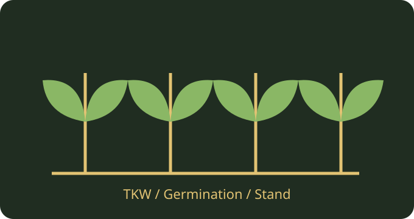

محاسبهگر نرخ بذر و مقدار خرید
برآورد نرخ بذر بر پایه تراکم بوته هدف، وزن هزار دانه، جوانهزنی، استقرار و خلوص.
محاسبه در مرورگر انجام میشود و دادهها به سرور ارسال نمیشوند.

محاسبه آنلاین
فرمول: تعداد بذر/مترمربع = تراکم هدف ÷ (جوانهزنی × استقرار)؛ کیلوگرم/هکتار = تعداد بذر × وزن هزار دانه ÷ (۱۰۰ × خلوص وزنی). درصدها به کسر تبدیل میشوند؛ استقرار مشروط به جوانهزنی است.
۵۰ راهنمای کوتاه و کاربردی مرتبط
هر عنوان را باز کنید تا نکته عملی و محدودیت تفسیر آن را بخوانید. این راهنماها جایگزین آزمون مزرعه و نظر متخصص نیستند.
بذر
01 هدف تراکم بوته
تراکم هدف را بر حسب بوته مستقر در مترمربع وارد کنید، نه تعداد بذر پاشیدهشده. هدف مناسب به رقم، اقلیم و تاریخ کاشت بستگی دارد.
02 وزن هزار دانه
وزن هزار دانه را از همان محموله بذر اندازه بگیرید. مقدار درجشده برای رقم دیگر میتواند نرخ بذر را تغییر دهد.
03 آزمون جوانهزنی
درصد جوانهزنی باید از آزمون معتبر همان بچ بذر به دست آید. درصد آزمایشگاهی الزاماً برابر استقرار واقعی مزرعه نیست.
04 درصد استقرار پس از جوانهزنی
ورودی استقرار سهمی از بذرهای جوانهزده است که به بوته مستقر تبدیل میشوند. آن را با درصد جوانهزنی یکی فرض نکنید.
05 درصد خلوص وزنی
خلوص وزنی نشان میدهد چه سهمی از جرم بسته بذر خالص محصول است. در خرید بذر ناخالص، جرم موردنیاز افزایش مییابد.
06 تفاوت دانه و بوته
همه دانههای کشتشده الزاماً به بوته زنده تبدیل نمیشوند. فرمول با جوانهزنی و استقرار این تفاوت را برآورد میکند.
07 محاسبه تعداد بذر
تعداد بذر لازم در مترمربع از تقسیم تراکم هدف بر احتمال جوانهزنی و استقرار حاصل میشود. خروجی برای تنظیم ماشین بذرکار کاربرد دارد.
08 محاسبه کیلوگرم در هکتار
برای تبدیل تعداد بذر به جرم، وزن هزار دانه وارد فرمول میشود. ابزار نتیجه را به کیلوگرم در هکتار گزارش میکند.
09 محاسبه کل مزرعه
مقدار کیلوگرم در هکتار را در مساحت هکتاری ضرب کنید. مساحت راههای دسترسی یا قطعات کشتنشده را در نظر نگیرید.
10 کالیبراسیون بذرکار
نرخ نظری باید با آزمون خروجی واقعی دستگاه تطبیق داده شود. لغزش چرخ، تنظیم دریچه و سرعت حرکت بر مقدار پاشش اثر دارند.
کیفیت
11 نمونهبرداری از بچ
نمونه آزمون باید نماینده کل محموله باشد. برداشت چند دانه از روی کیسه ممکن است کیفیت واقعی را نشان ندهد.
12 بذر شکسته
بذر آسیبدیده ممکن است جوانهزنی یا بنیه کمتری داشته باشد. پیش از کاشت درصد آسیب را بررسی کنید.
13 بنیه بذر
بنیه شاخص توان سبزشدن در شرایط تنش است و با جوانهزنی آزمایشگاهی یکسان نیست. برای بستر دشوار آزمون بنیه مفید است.
14 آلودگی بذر
آلودگی قارچی یا باکتریایی میتواند استقرار را کاهش دهد. از منابع معتبر و آزمون سلامت بذر استفاده کنید.
15 تاریخ آزمون
نتیجه جوانهزنی با گذر زمان و شرایط انبار ممکن است تغییر کند. به تاریخ آزمایش و شرایط نگهداری توجه کنید.
16 رطوبت بذر
رطوبت نامناسب میتواند نگهداری را دشوار کند. مقدار مناسب به گونه و روش انبارداری بستگی دارد.
17 خلوص رقم
خلوص ژنتیکی و خلوص فیزیکی دو مفهوم متفاوتاند. فرمول جرم بذر فقط خلوص وزنی را لحاظ میکند.
18 برچسب محموله
شماره بچ، نام رقم و گواهیهای موجود را با فاکتور تطبیق دهید. از ترکیب بچهای ناشناخته در محاسبه یکسان پرهیز کنید.
19 اندازهگیری هزار دانه
اگر شمارش هزار دانه دشوار است، چند نمونه صدتایی را وزن و میانگین بگیرید. خطای ترازو میتواند بر نرخ پیشنهادی اثر بگذارد.
20 تکرار آزمون
آزمون تکراری اختلاف نمونهها را آشکار میکند. برای تصمیم تجاری بزرگ از یک اندازهگیری تصادفی استفاده نکنید.
کاشت
21 عمق کاشت
عمق نامناسب ممکن است استقرار را کاهش دهد. عمق به گونه، بافت خاک و رطوبت بستگی دارد.
22 رطوبت بستر
بستر خیلی خشک یا خیلی مرطوب میتواند سبزشدن را مختل کند. زمان کاشت را با وضعیت واقعی خاک هماهنگ کنید.
23 سله خاک
تشکیل سله سطحی ممکن است خروج گیاهچه را محدود کند. پس از بارش شدید بستر را بازدید کنید.
24 دما هنگام سبزشدن
دما بر سرعت و یکنواختی جوانهزنی اثر دارد. توصیههای تاریخ کاشت را برای منطقه خود بررسی کنید.
25 بذرکاری دیرهنگام
تأخیر کاشت ممکن است تراکم هدف را تغییر دهد. نرخ را فقط با حدس بالا نبرید و از راهنمای محصول استفاده کنید.
26 کاشت ردیفی
فاصله ردیف و تعداد بذر در طول ردیف باید با تراکم مترمربعی سازگار باشد. تنظیمات دستگاه را در مزرعه راستیآزمایی کنید.
27 کاشت دستپاش
پراکنش ناهمگن در دستپاشی ممکن است نیاز به ارزیابی جداگانه داشته باشد. مقدار کل درست تضمینکننده یکنواختی نیست.
28 سرعت بذرکار
تغییر سرعت میتواند نرخ و عمق کاشت را تغییر دهد. پس از تغییر سرعت، آزمون کالیبراسیون را تکرار کنید.
29 فشردگی خاک
خاک فشرده ممکن است مانع توسعه ریشه و استقرار شود. نرخ بذر بیشتر جایگزین رفع محدودیت فیزیکی خاک نیست.
30 مدیریت بقایا
بقایای سطحی میتوانند بر تماس بذر با خاک اثر بگذارند. تنظیم کارنده را با مقدار بقایا تطبیق دهید.
مزرعه
31 تفاوت قطعهها
در زمینهایی با کیفیت بستر متفاوت برای هر قطعه نرخ جداگانه محاسبه کنید. میانگینگیری کل مزرعه میتواند پرت بذر ایجاد کند.
32 شوری خاک
شوری ممکن است سبزشدن را کاهش دهد. افزایش خودکار نرخ بذر بدون مدیریت شوری توصیه نمیشود.
33 آبیاری پس از کاشت
کمبود یا اضافه آب میتواند استقرار را کاهش دهد. برنامه آبدهی را با بافت خاک و نیاز محصول تنظیم کنید.
34 خطر پرندگان
خسارت پرندگان میتواند استقرار واقعی را کم کند. برآورد تلفات را از سابقه همان مزرعه بگیرید.
35 آفات خاکزی
آفات خاکزی ممکن است گیاهچهها را از بین ببرند. پایش و مدیریت تلفیقی را بر افزایش کورکورانه بذر مقدم بدانید.
36 خطر یخبندان
سرمازدگی در برخی کشتها استقرار را کم میکند. تاریخ کاشت و پیشبینی محلی را در تصمیم لحاظ کنید.
37 خشکسالی اولیه
کمبود رطوبت در مرحله سبزشدن میتواند درصد استقرار را کاهش دهد. داده سالهای خشک را از سالهای معمول جدا کنید.
38 تنظیم تراکم بر اساس رقم
ارقام مختلف ممکن است پنجهزنی یا معماری متفاوتی داشته باشند. تراکم هدف را از راهنمای رقم تعیین کنید.
39 محاسبه برای بذر گران
برای بذر گرانقیمت، دقت آزمون وزن و جوانهزنی اهمیت اقتصادی بیشتری دارد. نرخ پیشنهادی را پیش از خرید با داده واقعی کنترل کنید.
40 پایش سبزشدن
پس از استقرار در چند نقطه تصادفی بوتهشماری کنید. تفاوت با تراکم هدف را برای فصل بعد ثبت کنید.
کنترل
41 خلوص صددرصد
خلوص صددرصد یک حالت ایدهآل است. اگر گواهی آزمایش عدد کمتری دارد همان مقدار واقعی را وارد کنید.
42 جوانهزنی صددرصد
ورودی صددرصد در آزمایشگاه هم نادر است. برای پیشبینی واقعی از داده بچ خود استفاده کنید.
43 استقرار پایین
با کاهش استقرار پیشبینیشده، مقدار بذر محاسبهشده زیاد میشود. افزایش بسیار زیاد باید علتیابی شود، نه بیقید اجرا.
44 ورودیهای غیرمجاز
مقادیر درصد باید بیشتر از صفر و حداکثر صد باشند. وزن هزار دانه، تراکم و مساحت نیز باید مثبت باشند.
45 اعداد فارسی
میتوانید عدد را با رقم فارسی یا انگلیسی وارد کنید. ممیز را با نقطه یا علامت اعشاری مناسب ثبت کنید.
46 مقایسه دو سناریو
برای بررسی حساسیت، درصد استقرار را با دو سناریوی واقعبینانه وارد کنید. اختلاف کیلوگرم نشان میدهد برآورد تلفات چقدر مهم است.
47 محاسبه با چند بچ
اگر دو بچ وزن هزار دانه یا جوانهزنی متفاوت دارند، جداگانه حساب کنید. ترکیب بدون وزندهی صحیح میتواند خطا ایجاد کند.
48 برآورد خرید
مقدار خرید ممکن است با مقدار مصرف خالص متفاوت باشد. بستهبندی، تلفات بارگیری و ذخیره مجاز را جداگانه برنامهریزی کنید.
49 نرخ واقعی بذرکار
پس از کالیبراسیون، مقدار خروجی در سطح مشخص را وزن کنید. نرخ واقعی را با خروجی کیلوگرم در هکتار مقایسه کنید.
50 مرز کاربرد ابزار
ابزار نرخ وزنی بذر را حساب میکند و رقم مناسب یا زمان کاشت را انتخاب نمیکند. برای تصمیم نهایی توصیه بومی و نظر کارشناس ضروری است.
منابع روش محاسبه
University of Minnesota Extension: Seeding Rate — تراکم، جوانهزنی و تلفات استقرار.
Alberta Agriculture: 1000 Kernel Weight — تبدیل وزن هزار دانه به نرخ بذر.
این ابزار راهنمای برنامهریزی اولیه است؛ نتیجه تضمین عملکرد، توصیه قطعی کشاورزی یا تأییدیه علمی مستقل نیست.